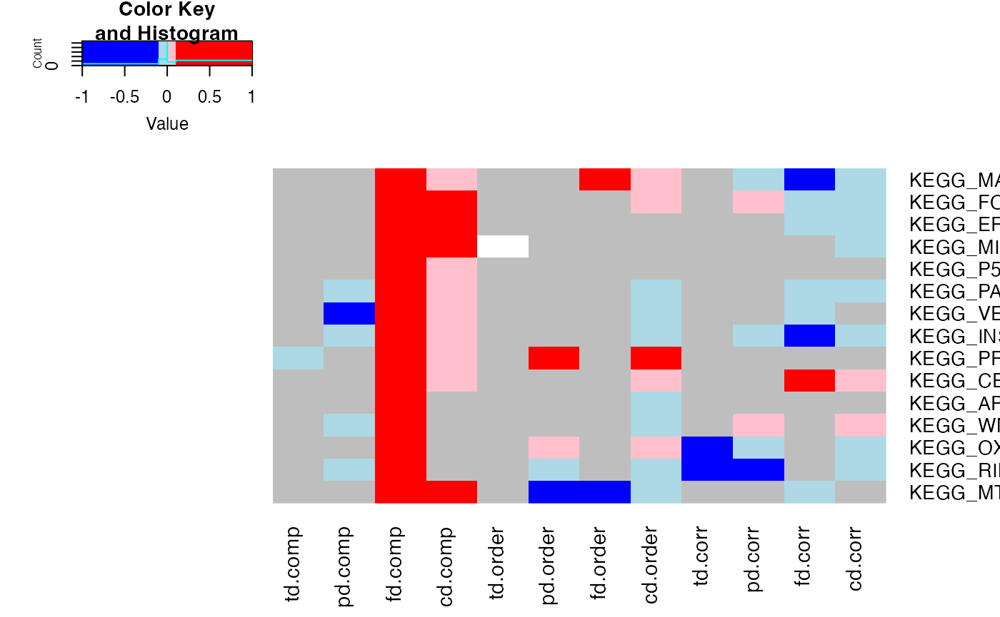
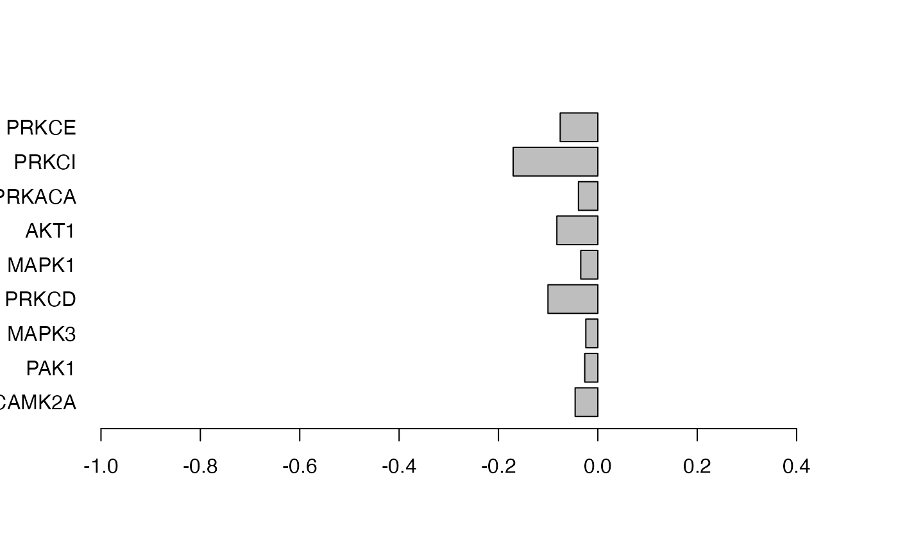

leapR Paper Examples
examples.RmdExample data
A sample data set is included that is from the CPTAC study of 169
ovarian tumors. We include the dataset as a object, containing three
assays (transcriptomics, global proteomics, and phosphoproteomics) to
enable interoperability with other tools, and store example file as
rda on Figshare
as example.
This data can be loaded as follows:
url <- "https://api.figshare.com/v2/file/download/56536217"
pdata <- download.file(url, method = "libcurl", destfile = "protData.rda")
# as.matrix()
load("protData.rda")
p <- file.remove("protData.rda")
url <- "https://api.figshare.com/v2/file/download/56536214"
tdata <- download.file(url, method = "libcurl", destfile = "transData.rda")
load("transData.rda")
p <- file.remove("transData.rda")
url <- "https://api.figshare.com/v2/file/download/56536211"
phdata <- download.file(url, method = "libcurl", destfile = "phosData.rda")
load("phosData.rda")
p <- file.remove("phosData.rda")We also have local data we can load
Figure 2
We will compare the ability of transcriptomics, proteomics, and
phosphoproteomics to inform about differences between short and long
surviving patient groups. In addition to other methods, we also employ a
calcTTest function that takes two sets of samples from the
SummarizedExperiment object and computes the t-test between
them. The results are then stored in the rowData of the
same object, so that they can be used for enrichment later on.
This spans the multiple enrichment methods in leapR and also includes multi-omics.
The resulting heatmap is presented as Figure 2 in the paper.
# load the single omic and multi-omic pathway databases
data("krbpaths")
data("mo_krbpaths")
# comparison enrichment in transcriptional data
transdata.comp.enrichment.svl <- leapR::leapR(
geneset = krbpaths,
enrichment_method = "enrichment_comparison",
eset = tset,
assay_name = "transcriptomics",
primary_columns = shortlist,
secondary_columns = longlist
)
# comparison enrichment in proteomics data
# this is the same code used above, just repeated here for clarity
protdata.comp.enrichment.svl <- leapR::leapR(
geneset = krbpaths,
enrichment_method = "enrichment_comparison",
eset = pset,
assay_name = "proteomics",
primary_columns = shortlist,
secondary_columns = longlist
)
# comparison enrichment in phosphoproteomics data
phosphodata.comp.enrichment.svl <- leapR::leapR(
geneset = krbpaths,
enrichment_method = "enrichment_comparison",
eset = phset,
assay_name = "phosphoproteomics",
primary_columns = shortlist,
secondary_columns = longlist, id_column = "hgnc_id"
)
# set enrichment in transcriptomics data
# perform the comparison t-test
tset <- leapR::calcTTest(tset, assay_name = "transcriptomics",
shortlist, longlist)
## now we need to run enrichment in sets with target list, not eset
transdata.set.enrichment.svl <- leapR::leapR(
geneset = krbpaths,
eset = tset,
assay_name = "transcriptomics",
enrichment_method = "enrichment_in_sets",
primary_columns = "pvalue",
greaterthan = FALSE, threshold = 0.05
)
pset <- leapR::calcTTest(pset, assay_name = "proteomics",
shortlist, longlist)
protdata.set.enrichment.svl <- leapR::leapR(
geneset = krbpaths,
eset = pset,
assay_name = "proteomics",
enrichment_method = "enrichment_in_sets",
primary_columns = "pvalue",
greaterthan = FALSE, threshold = 0.05
)
phset <- leapR::calcTTest(phset, assay_name = "phosphoproteomics",
shortlist, longlist)
phosphodata.set.enrichment.svl <- leapR::leapR(
geneset = krbpaths,
enrichment_method = "enrichment_in_sets",
id_column = "hgnc_id",
assay_name = "phosphoproteomics",
eset = phset, primary_columns = "pvalue",
greaterthan = FALSE, threshold = 0.05
)
# order enrichment in transcriptomics data
transdata.order.enrichment.svl <- leapR::leapR(
geneset = krbpaths,
enrichment_method = "enrichment_in_order",
eset = tset,
assay_name = "transcriptomics",
primary_columns = "difference"
)
# order enrichment in proteomics data
protdata.order.enrichment.svl <- leapR::leapR(
geneset = krbpaths,
enrichment_method = "enrichment_in_order",
eset = pset,
assay_name = "proteomics",
primary_columns = "difference"
)
# order enrichment in phosphoproteomics data
phosphodata.order.enrichment.svl <- leapR::leapR(
geneset = krbpaths,
enrichment_method = "enrichment_in_order",
id_column = "hgnc_id",
method = 'ztest',
eset = phset,
assay_name = "phosphoproteomics",
primary_columns = "difference"
)
# correlation difference in transcriptomics data
transdata.corr.enrichment.svl <- leapR::leapR(
geneset = krbpaths,
enrichment_method = "correlation_comparison",
eset = tset,
assay_name = "transcriptomics",
primary_columns = shortlist,
secondary_columns = longlist
)
# correlation difference in proteomics data
protdata.corr.enrichment.svl <- leapR::leapR(
geneset = krbpaths,
enrichment_method = "correlation_comparison",
eset = pset,
assay_name = "proteomics",
primary_columns = shortlist,
secondary_columns = longlist
)
# correlation difference in phosphoproteomics data
phosphodata.corr.enrichment.svl <- leapR::leapR(
geneset = krbpaths,
enrichment_method = "correlation_comparison",
eset = phset,
assay_name = "phosphoproteomics",
primary_columns = shortlist,
secondary_columns = longlist, id_column = "hgnc_id"
)
# combine the omics data into one with prefix tags
comboset <- leapR::combine_omics(list(pset, phset, tset),
c(NA, "hgnc_id", NA))
# comparison enrichment for combodata
# when we use expression set, we do not need to use the mo_krbpaths
#since the id mapping column is used
combodata.enrichment.svl <- leapR::leapR(
geneset = krbpaths, # mo_krbpaths,
enrichment_method = "enrichment_comparison",
eset = comboset,
assay_name = "combined",
primary_columns = shortlist,
secondary_columns = longlist, id_column = "id"
)
# set enrichment in combo data
# perform the comparison t test
comboset <- leapR::calcTTest(comboset,
assay_name = "combined",
shortlist, longlist)
combodata.set.enrichment.svl <- leapR::leapR(
geneset = krbpaths,
enrichment_method = "enrichment_in_sets",
eset = comboset, primary_columns = "pvalue",
assay_name = "combined",
id_column = "id",
greaterthan = FALSE, threshold = 0.05
)
# order enrichment in combo data
combodata.order.enrichment.svl <- leapR::leapR(
geneset = krbpaths,
enrichment_method = "enrichment_in_order",
assay_name = "combined",
eset = comboset, primary_columns = "difference",
id_column = "id"
)
# correlation difference in combo data
combodata.corr.enrichment.svl <- leapR::leapR(
geneset = krbpaths,
enrichment_method = "correlation_comparison",
eset = comboset,
assay_name = "combined",
primary_columns = shortlist,
id_column = "id",
secondary_columns = longlist
)
# now take all these results and combine them into one figure
all_results <- list(
transdata.comp.enrichment.svl,
protdata.comp.enrichment.svl,
phosphodata.comp.enrichment.svl,
combodata.enrichment.svl,
transdata.set.enrichment.svl,
protdata.set.enrichment.svl,
phosphodata.set.enrichment.svl,
combodata.set.enrichment.svl,
transdata.order.enrichment.svl,
protdata.order.enrichment.svl,
phosphodata.order.enrichment.svl,
combodata.order.enrichment.svl,
transdata.corr.enrichment.svl,
protdata.corr.enrichment.svl,
phosphodata.corr.enrichment.svl,
combodata.corr.enrichment.svl
)
pathways_of_interest <- c(
"KEGG_APOPTOSIS",
"KEGG_CELL_CYCLE",
"KEGG_ERBB_SIGNALING_PATHWAY",
"KEGG_FOCAL_ADHESION",
"KEGG_INSULIN_SIGNALING_PATHWAY",
"KEGG_MAPK_SIGNALING_PATHWAY",
"KEGG_MISMATCH_REPAIR",
"KEGG_MTOR_SIGNALING_PATHWAY",
"KEGG_OXIDATIVE_PHOSPHORYLATION",
"KEGG_P53_SIGNALING_PATHWAY",
"KEGG_PATHWAYS_IN_CANCER",
"KEGG_PROTEASOME",
"KEGG_RIBOSOME",
"KEGG_VEGF_SIGNALING_PATHWAY",
"KEGG_WNT_SIGNALING_PATHWAY"
)
results.frame <- data.frame(
pathway = pathways_of_interest,
td.comp = all_results[[1]][pathways_of_interest, "BH_pvalue"] < 0.05,
pd.comp = all_results[[2]][pathways_of_interest, "BH_pvalue"] < 0.05,
fd.comp = all_results[[3]][pathways_of_interest, "BH_pvalue"] < 0.05,
cd.comp = all_results[[4]][pathways_of_interest, "BH_pvalue"] < 0.05,
td.set = all_results[[5]][pathways_of_interest, "BH_pvalue"] < 0.05,
pd.set = all_results[[6]][pathways_of_interest, "BH_pvalue"] < 0.05,
fd.set = all_results[[7]][pathways_of_interest, "BH_pvalue"] < 0.05,
cd.set = all_results[[8]][pathways_of_interest, "BH_pvalue"] < 0.05,
td.order = all_results[[9]][pathways_of_interest, "BH_pvalue"] < 0.05,
pd.order = all_results[[10]][pathways_of_interest, "BH_pvalue"] < 0.05,
fd.order = all_results[[11]][pathways_of_interest, "BH_pvalue"] < 0.05,
cd.order = all_results[[12]][pathways_of_interest, "BH_pvalue"] < 0.05,
td.corr = all_results[[13]][pathways_of_interest, "BH_pvalue"] < 0.05,
pd.corr = all_results[[14]][pathways_of_interest, "BH_pvalue"] < 0.05,
fd.corr = all_results[[15]][pathways_of_interest, "BH_pvalue"] < 0.05,
cd.corr = all_results[[16]][pathways_of_interest, "BH_pvalue"] < 0.05
)
results.frame.or <- data.frame(
pathway = pathways_of_interest,
td.comp = all_results[[1]][pathways_of_interest, "oddsratio"],
pd.comp = all_results[[2]][pathways_of_interest, "oddsratio"],
fd.comp = all_results[[3]][pathways_of_interest, "oddsratio"],
cd.comp = all_results[[4]][pathways_of_interest, "oddsratio"],
td.set = log(all_results[[5]][pathways_of_interest, "oddsratio"], 2),
pd.set = log(all_results[[6]][pathways_of_interest, "oddsratio"], 2),
fd.set = log(all_results[[7]][pathways_of_interest, "oddsratio"], 2),
cd.set = log(all_results[[8]][pathways_of_interest, "oddsratio"], 2),
td.order = all_results[[9]][pathways_of_interest, "oddsratio"],
pd.order = all_results[[10]][pathways_of_interest, "oddsratio"],
fd.order = all_results[[11]][pathways_of_interest, "oddsratio"],
cd.order = all_results[[12]][pathways_of_interest, "oddsratio"],
td.corr = all_results[[13]][pathways_of_interest, "oddsratio"],
pd.corr = all_results[[14]][pathways_of_interest, "oddsratio"],
fd.corr = all_results[[15]][pathways_of_interest, "oddsratio"],
cd.corr = all_results[[16]][pathways_of_interest, "oddsratio"]
)
rownames(results.frame) <- results.frame[, 1]
rownames(results.frame.or) <- results.frame.or[, 1]
results.frame.sig <- results.frame[, 2:17] * results.frame.or[, 2:17]
heatmap.2(as.matrix(results.frame.sig[, c(1:4, 9:16)]), Colv = NA,
trace = "none", breaks = c(-1, -.1, -0.0001, 0, 0.1, 1),
col = c("blue", "lightblue", "grey", "pink", "red"),
dendrogram = "none")
Figure 3. An application of the KSEA-like approach in leapR as applied to our example data. In this example we are looking for known substrate sets of kinases (from Phosphosite Plus) that are enriched in the short vs long comparison of phosphopeptides.
# this comparison of abundance in substrates between case and control
# is lopsided in the sense that phosphorylation levels were previously
# reported to be overall higher in the short survivors. Thus the
# results are not terribly interesting (all kinases are in the same
# direction)
phosphodata.ksea.comp.svl <- leapR::leapR(
geneset = kinasesubstrates,
enrichment_method = "enrichment_comparison",
eset = phset,
assay_name = "phosphoproteomics",
primary_columns = shortlist, secondary_columns = longlist
)
# thus for the example we'll look at correlation between known substrates
# in the case v control conditions
phosphodata.ksea.corr.svl <- leapR::leapR(
geneset = kinasesubstrates,
enrichment_method = "correlation_comparison",
eset = phset,
assay_name = "phosphoproteomics",
primary_columns = shortlist,
secondary_columns = longlist
)
# for the example we are using an UNCORRECTED PVALUE
# which will allow us to plot more values, but
# for real applications it's necessary to use the
# CORRECTED PVALUE
# here are all the kinases *significant (*uncorrected) from the analysis
or <- order(phosphodata.ksea.corr.svl[, "pvalue"])
ksea_result <- phosphodata.ksea.corr.svl[or, ][1:9, ]
ksea_cols <- rep("grey", 9)
ksea_cols[which(ksea_result[, "oddsratio"] > 0)] <- "black"
# plot left panel: correlation significance of top most significant kinases
barplot(ksea_result[, "oddsratio"],
horiz = TRUE, xlim = c(-1, 0.5),
names.arg = rownames(ksea_result), las = 1, col = ksea_cols
)